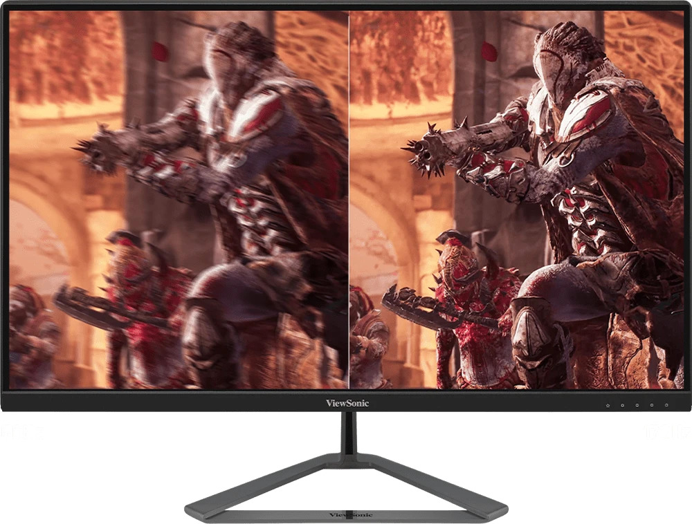
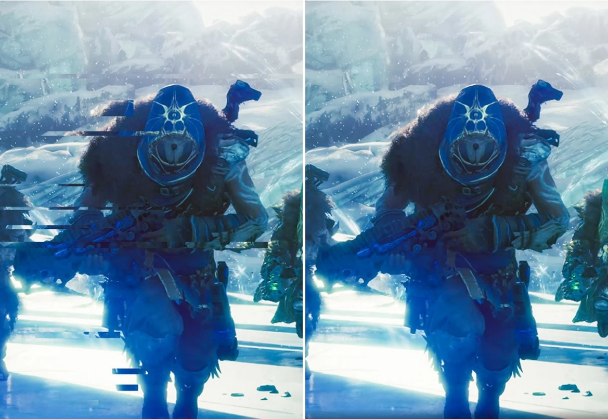
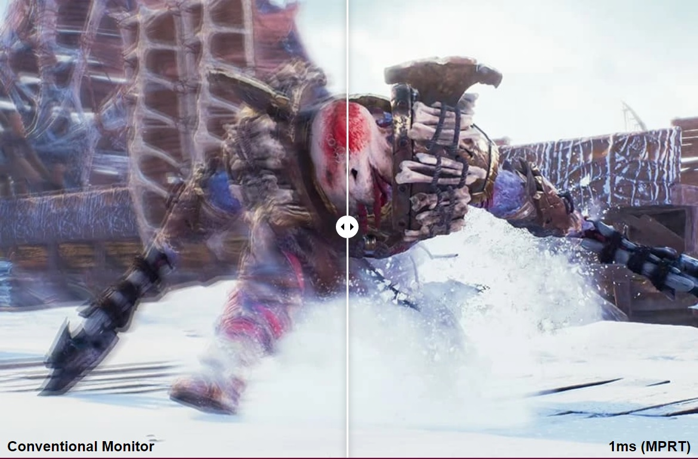

ViewSonic VX2780-2K предлагает потрясающее визуальное восприятие благодаря частоте обновления 170 Гц. Этот монитор с высокой частотой обновления обеспечивает плавное отображение движущихся объектов и минимальную задержку ввода. Технология AMD FreeSync™ Premium предотвращает разрывы изображения и рывки, обеспечивая плавную динамику игрового процесса. С временем отклика MPRT 1 мс достигается уникальное качество изображения и молниеносная скорость. VX2780-2K также включает в себя эксклюзивные предустановки ViewMode™ от ViewSonic, оптимизирующие экран для различных домашних развлекательных сценариев, таких как просмотр фильмов, редактирование или видеоигры. Кроме того, наличие DisplayPort и двух портов HDMI обеспечивает гибкие возможности подключения как для повседневного использования, так и для развлечений.
С частотой обновления в 170 Гц монитор OMNI VX2780-2K обеспечивает идеальную игровую и мультимедийную платформу без необходимости разгона. Плавные и безукоризненные визуальные эффекты дают возможность точно поражать цели снова и снова, независимо от скорости их движения. Когда каждый кадр имеет значение, вы не должны упускать ни одной детали.
С помощью технологии AMD FreeSync™ монитор способен автоматически адаптироваться к графике, что позволяет избегать разрывов изображения.
Время отклика 1 мс (MPRT) обеспечивает высокую производительность благодаря плавному переключению пикселей и уменьшению цветовых ореолов.
Разрешение QHD вдвое превышает стандартное Full HD, обеспечивая более четкое изображение без искажений при сохранении стандартного соотношения сторон 16:9.

Быстрая IPS-панель монитора OMNI VX2780-2K обеспечивает выдающуюся цветопередачу, сочетающую высокую точность и яркость, позволяя вам полностью погрузиться в игровой мир. Совместно с широкими углами обзора, монитор всегда обеспечивает оптимальное качество просмотра.

VX2780-2K разработан с учетом энергоэффективности и имеет режим Eco Mode, который снижает энергопотребление, выброс углекислого газа и расходы на электроэнергию.